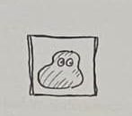
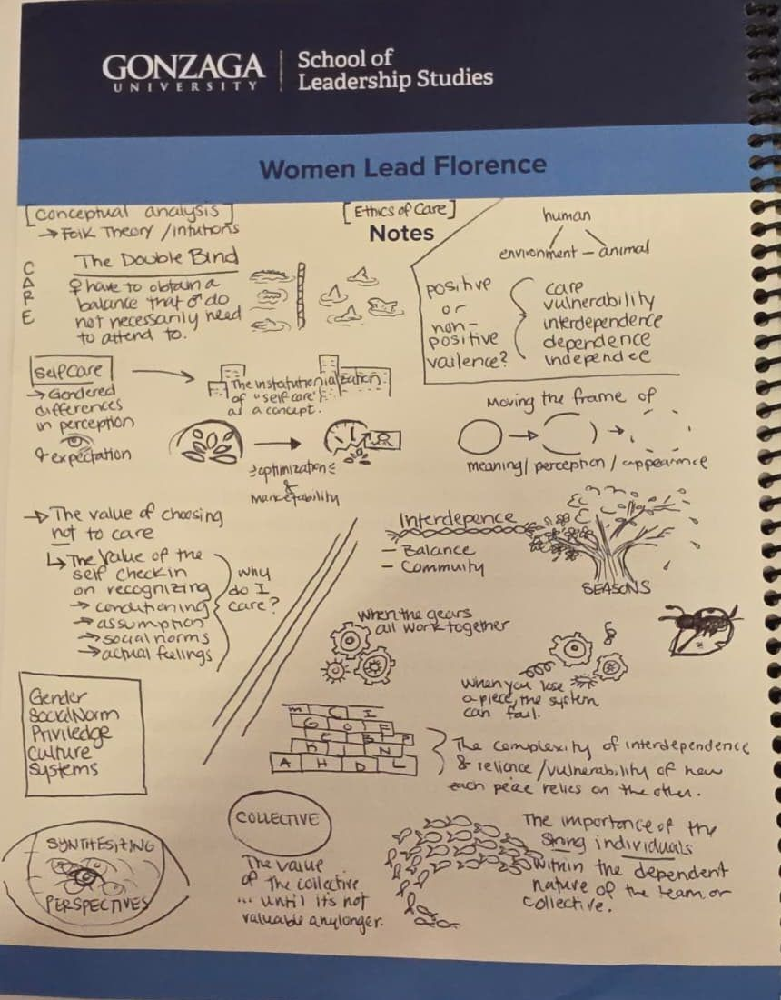
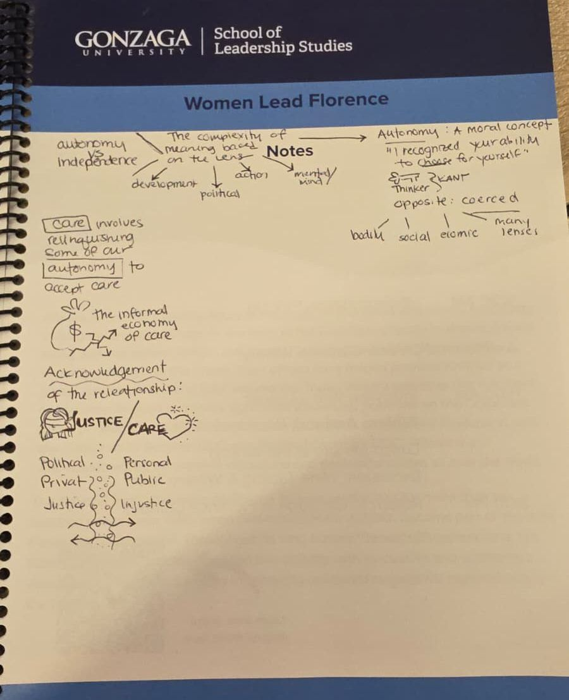
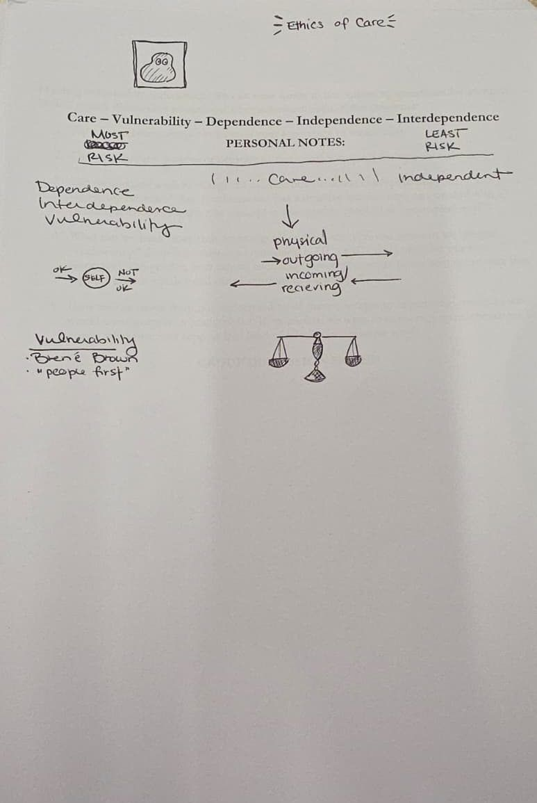

Journey 06 · Firenze Note 6 of 11 Field Note
A Blank Page About Care
Field notes from Florence on vulnerability, interdependence, and the harder side of being cared for.
I sat down for ten minutes with a blank page and a task: write down what comes to mind when you think about care, vulnerability, dependence, independence, and interdependence.
My page stayed mostly empty.
Around the room, other women filled theirs. Ideas moved across their pages, connecting to stories, work, family, leadership, memory, and experience. Their pages looked alive. Mine looked like someone keeping herself carefully contained.
I began drawing a squishy character, then protecting it inside a thickly lined box.

We were in a workshop led by Denise Regina Percequillo Hossom, a philosopher at Gonzaga whose work moves through environmental ethics, feminist epistemologies, and the philosophy of science. The session was titled “Dependency Relations, Vulnerability, and Care: How the Ethics of Care Can Help Shape Our Understanding of the Intersections Between Gender and Leadership.”
With a title like that, I expected something more abstract. Instead, the workshop moved straight into questions that felt uncomfortably close.

Denise began by asking us what we actually mean when we talk about care. Care as ethics. Care as practice. Care as something more demanding than kindness, sentiment, or good intention. The conversation moved through vulnerability, dependence, independence, and interdependence, each idea touching the next.
Vulnerability came first: the state of being exposed, of being able to be hurt, of needing other people. The point was that vulnerability is not a flaw in the human condition. It is the human condition.
We begin our lives completely dependent. On parents, caregivers, systems, strangers, infrastructure, people making sure food arrives, water moves, rooms are cleaned, records are kept, medicine is available, doors open. Some dependence is visible but some of it is hidden so well that we mistake it for independence.
That was one of the ideas I appreciated most from the workshop: independence was not framed as the opposite of dependence, but as a capacity that exists inside relationship. It is something we develop, something we can lose, and something made possible by the interdependence underneath it.
That part made sense to me. I could follow the framework, and I could see why it mattered for leadership, gender, institutions, and community. I could see how much harm comes from pretending people are fully self-sufficient when none of us actually are.
Then Denise moved toward incoming care: the care we receive, and the vulnerability required to accept it. That is where something in me shifted.
I know how to give care. I practice that kind of care constantly. It is built into how I move through work, relationships, and the world. I believe in it. I trust it. I can defend it intellectually and practice it almost instinctively.
Receiving care is different.
Receiving care asks for a kind of vulnerability I rank much higher on the risk scale than giving care. Much higher, I think, than many people in the room did. As the conversation continued, I found myself making a private list in my notebook: dependence, interdependence, and vulnerability on the risky end. Independence on the safer end. Care in the middle, with one important split.

Giving care: lower risk.
Receiving care: higher risk. Much higher.
The room was taking the questions seriously, and I could see the value in that. I could feel people making connections in real time. And still, I found myself in a different relationship to the material than the conversation seemed to invite.
Denise facilitated with precision. She kept the thinking deep without forcing it into one direction. She asked questions that opened space for reflection. You could feel both the intellectual rigor and the care for the group working at the same time.
I stayed present. I listened. I took notes. I understood. But I could not participate in the way the room was modeling.
I practice vulnerability. I really do. But it does not always look like the version of vulnerability that gets praised in group settings. It does not always look like immediate openness, visible emotion, or sharing in a newly formed room. My practice of vulnerability is real, and it is mine, but it is more guarded, more selective, and more attentive to context.
Asking for vulnerability in a room of people you have just met, across language differences, cultural differences, and personal histories no one can fully know, is not a small ask. For some people, that kind of invitation feels like an opening. For me, it feels like a risk I was not able to take.
Both things can be true.

Even in rooms designed to be safe, safety is more complicated than we sometimes say. A room can be generous, thoughtful, and well held. The people in it can be sincere, the facilitator skilled, the topic meaningful.
And still, the body may make its own assessment.
Mine did and I am sitting with that still. I understand the ethics of care intellectually. I see the power of interdependence as a framework. I recognize the truth of vulnerability.
But when I apply those ideas to myself, something in me measures risk before it measures connection. That does not make the framework wrong or make me closed off to care. It just means I am starting from a different place.
That may be what I carried out of the workshop: care is not only about learning to give more generously. Sometimes it is about noticing what receiving care asks of us, and being honest about why that can feel hard.
I left with a mostly blank page.
But it turns out the blank page had been saying something after all.
Mentioned in
Originally published at fieldnotesfromabroad.com/2026/05/20/a-blank-page-about-care/